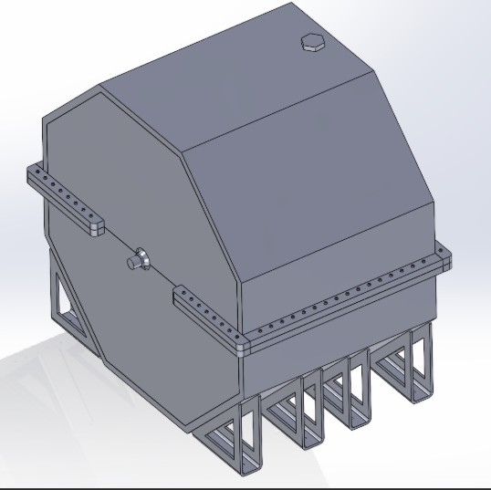
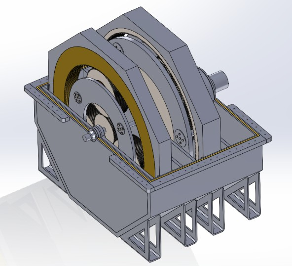
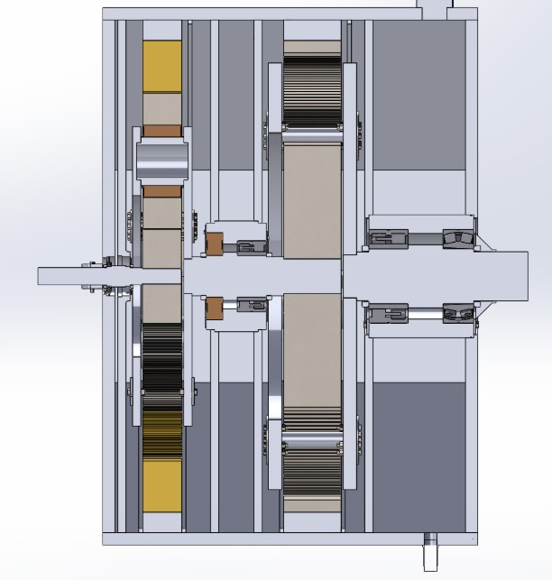

Adaptive Gear Box Project
Senior mechanical design engineering project in which I designed and modelled a multistage planetary gearbox intended to convert high speed rotations to low speed rotations in a solar powered power plant application.



Specifically:
- Conducted force, stress, and fatigue analyses based on power input and operation requirements, allowing for exact specification of mechanical elements including gears, shafts, bearings, keys, and fasteners.
- Modelled and designed parts using SolidWorks, creating complex assembly.
- Created fabrication quality drawings for parts and assemblies; authored 102 page test report summarizing design decisions and analyses.
Role
Mechanical Design Engineer
Location
Victoria
Tools
SolidWorks, Microsoft Office Suite